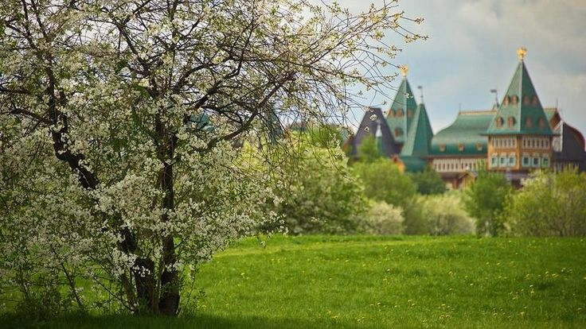

Сканди-мероприятия
-
Субботняя тренировка по Скандинавской ходьбе в парке "Коломенское"
2 декабря 2023г. Начало в 10:00
Тренировка по Скандинавской ходьбе
Встречаемся в 9.45 у Дворца Алексея Михайловича. Вход в парк со стороны метро "Каширская"
Тренировка походит как новичкам, так и спортсменам продвинутого уровня.
Что ждёт на тренировке:
• Активная разминка
• Отработка техники скандинавского шага
• Тренировка в outdoor формате с резинками и использованием уличных площадок
• Растяжка
Километраж пройденный на тренировке зависит от нашего желания и возможностей.
Одежда и обувь спортивная по погоде. Возможна аренда палок - стоимость 100р (сообщить при регистрации).
Продолжительность занятия 2 часа.
Совместное кофе/чаепитие при желании в кафе дворца по окончании тренировки.
Стоимость: 1000р
В стоимость НЕ входит аренда палок
ЗаписатьсяПодробнее -
SCANDI-ПРОГУЛКА "Литературная Поварская. Золотой, серебряный и медный век русской литературы"
9 декабря 2023г. Начало в 11:00
Сканди-прогулка по культурным объектам русской литературы
Что мы увидим:
✅Усадьбу А.П. Толстого, где жил Н.В. Гоголь.(2 том Мёртвых душ сгорел там же)Никитский бульвар;
✅Доходный дом архитектора В.Е. Дубовского, где до 2010г жила Б.А. Ахмадулина;
✅Бунинский сквер и доходный дом архитектора О.Г. Пиотровского, где в разное время проживали И.А. Бунин и Б.А. Пильняк( он же Вагау), самый издаваемый писатель середины 20 годов;
✅Дом-музей М.И. Цветаевой в Борисоглебском переулке;
✅Усадьбу А.Ф. Писемского, самого высокооплачиваемого писателя второй половины 19 века.
✅ Усадьбу Боде-Колычевых, знаменитый "дом Наташи Ростовой".
Прогулка рассчитана на 3 часа часа.
В начале прогулки разминка по-скандинавски, в конце - заминка
Скандинавские палки берём с собой. Одежда и обувь спортивная по погоде. Можно взять термос с горячим питьём.
В конце прогулки можно совместно заглянуть на кофеек в одно из кафе.
Общий километраж около 5 км.
Встречаемся в 10.45 на выходе 8 метро Арбатская, ветка 3(темно-синяя).
Окончание у метро Баррикадная
Сопровождение:
Василий Злотников - экскурсовод Маргарита Волосюк - инструктор
Стоимость: 1600р
В стоимость входит использование радиогидов
Записаться Подробнее
Подробнее -
ВОСКРЕСНАЯ ТРЕНИРОВКА ПО СКАНДИНАВСКОЙ ХОДЬБЕ В ЛУЖНИКАХ + посешение бассейна Лужники(по желанию)
10 декабря 2023г. Начало в 11:00
Тренировка в лужниках
Встречаемся в 10.45 у выхода N3 из метро Воробьевы горы
Что ждёт на тренировке:
• Активная разминка
• Отработка техники скандинавского шага
• Тренировка в outdoor формате с резинками и использованием уличных площадок
• Растяжка
Продолжительность основной тренировки 2 часа
Свои палки иметь желательно. Если их нет, предоставим (аренда 100р) Сообщите дополнительно при регистрации.
После тренировки все желаюшие идут в аквакомплекс "Лужники"
Пьем кофе/чай в Aквакафе и мило общаемся.
Посещение бассейна стоимость:
Бассейн 50м - 850р
Бассейн 25м - 650р
В стоимость входит 1 час плавания в бассейне + 1 час термы. Оплачивается в кассах бассейна.
ВНИМАНИЕ! В бассейне наши тренера не имеют право поводить занятия. Поэтому плавание свободное.
Стоимость: 1000р
Записаться Подробнее
Подробнее -
БОЛЬШОЙ СПОРТИВНО-ЭКСКУРСИОННЫЙ ДЕНЬ в городе Видное
17 декабря 2023г. Начало в 10:00
Тренировка по Скандинавской ходьбе на одной из лучших трасс + экскурсия в удивительно симпатичном городе Видное.
Начало тренировки в 10.00
Встречаемся у входа в парк Апаринки в 9.45
Тренировка с отработкой техники и функциональным тренингом на подготовленной лыжеролерной трассе. На этой трассе проходят соревнования по Северной ходьбе МОФСХ. Это хорошая возможность проверить себя и эффективно потренироваться с инструктором. Продолжительность тренировки 2 часа.
Километраж зависит от возможностей группы.
После тренировки перерыв на кофе-паузу в кафе Лесное.
В 13.00 начало экскурсии от парка Апаринки.
"Город-сад Видное и усадьба Тимохово-Салазкино"
Город Видное по праву считается одним из красивейших в Подмосковье. Его архитектурный ансамбль создан в 40-х годах двадцатого века как цельная и комфортная для жизни городская среда. Уникальный по своему масштабу и цельности образец «города-сада» – это отмечал даже выдающийся архитектор А.В. Щусев.
Во время прогулки с агроэкологом Антоном Гладилиным мы познакомимся с историей возникновения города, развитием его концепции и этапами строительства. Мы пройдем по Школьной и Садовой улицам с 1- и 2-этажной застройкой. Увидим восстановленный комплекс зданий на Советской площади. Разумеется, не обойдем вниманием один из символов города – уникальную водонапорную башню шатрового типа высотой 25 метров.
Постараемся ответить на ряд вопросов. В чем заключается концепция «города-сада» и кто стал ее родоначальником? Какие известные архитекторы и ландшафтники внесли свой вклад в создание города? Есть ли аналоги у Видного с архитектурой Англии? Почему историческая застройка города была отнесена к объектам культурного наследия?
На нашем пути парки будут чередоваться с городскими кварталами. Мы посетим прекрасно восстановленную усадьбу Тимохово-Салазкино с комплексом зданий в стиле неоготики. В усадьбе можно будет посетить уютное кафе «Библиотека» и купить сувениры. А еще мы будем искать различные «интересности», например, сохранившиеся здания платформы Расторгуево 1900-х годов.
Рассмотрим особенности рельефа и долины реки Битца, природные объекты.
Окончание экскурсии у ж/д станции Расторгуево.
Продолжительность экскурсии около 2,5 часов.
Сопровождение:
Инструктор Маргарита Волосюк
Экскурсовод Антон Гладилин
Как добраться!
Общественный транспорт: ж/д станция Расторгуево (Павелецкое направление), далее авт.364 до остановки "Площадь", затем пешком до входа в парк Апаринки.
На автомобиле: при комплекском или только экскурсии посещении добираемся до ст.Расторгуево и оставляем машину на парковке и едем на автобусе до места назначения. При посещении только тренировки добираетесь до парка Апаринки.
Форма одежды спортивная многослойная. Мероприятие длительное и должна быть возможность надеть что-то теплое после тренировки.
Стоимость:
1000р - тренировка отдельно1800р - экскурсия отдельно
2500р - тренировка + экскурсия
*Возможно посещение отдельно тренировки или экскурсии, а также комплексное посещение.
Записаться Подробнее
Подробнее -
ПРАЗДНИЧНАЯ СПОРТИВНО-ПОЗНАВАТЕЛЬНАЯ ПРОГУЛКА "Ожерелье центральных площадей"
23 декабря 2023г. Начало в 16:00
Праздничная познавательная прогулка по историческому центру нашего города.
Манежная, Лубянская, Старая, Новая и Славянская площади, Ильинский сквер и Лубянский проезд.
Шумная, деловая, богобоязненная и безалаберная Первопрестольная на рубеже эпох.
Гостиницы Националь и Метрополь, доходный дом страхового общества Россия, долгострой Политехнического музея, часовня-памятник гренадерам Плевны, штаб-кватира сыроваров Бландовых, гостиница Н.А.Второва.
Продолжительность около 3 часов
Встречаемся на выходе N11
метро Лубянка в 15.45.
Окончание около метро Китай-город.
Одежда спортивно-празничная. Скандинавские палки берём обязательно.
Стоимость: 1600р - тренировка отдельно
В стоимость входит использование радиогида
Записаться Подробнее
Подробнее